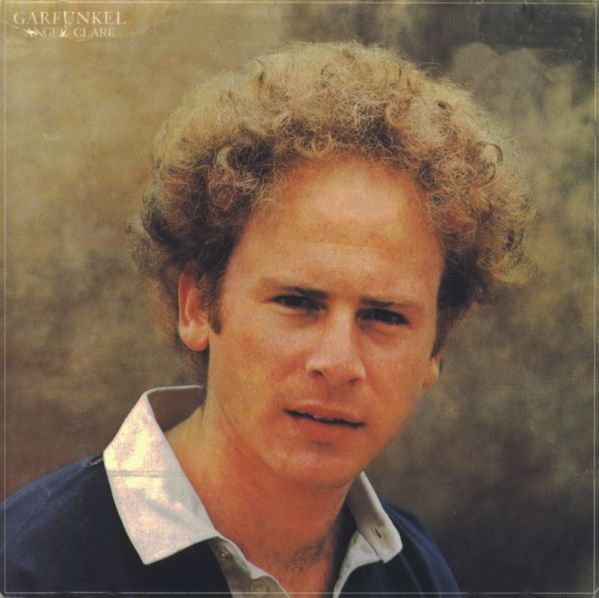

<!--
  Generated template for the ShareModalPage page.

  See http://ionicframework.com/docs/components/#navigation for more info on
  Ionic pages and navigation.
-->
<ion-header>

  <ion-navbar>
    <ion-title style="padding-top: 5px">Share</ion-title>
  </ion-navbar>

</ion-header>

<ion-content>
  <!--<div>-->
    <!--<h1>Image 1</h1>-->
    <!--<div *ngIf="cameraImageURI != null"></div>-->
    <!--&lt;!&ndash;&ndash;&gt;-->
    <!--<div>-->
      <!--<h1>Image 2</h1>-->
      <!--<div *ngIf="streetViewPhotoURI != null"></div>-->
      <!--&lt;!&ndash;&ndash;&gt;-->
    <!--</div>-->

    <!--<div class="row" >-->

      <!--<div class="col col-50" style="padding-right:0;">-->
        <!---->
      <!--</div>-->

      <!--<div class="col col-50" style="padding-left:0;">-->
        <!--
             <!--style="width:100%">-->
      <!--</div>-->

    <!--</div>-->

    <!--<h1>Stretched Image (480x360)</h1>-->

      <!--<div class="row" >-->
        <!--<div class="col col-50" style="padding-right:0;">-->
          <!---->
        <!--</div>-->
        <!--<div class="col col-50" style="padding-left:0;">-->
          <!---->
        <!--</div>-->
      <!--</div>-->

  <canvas id="pano-canvas" style="display:none;"></canvas>

  <div class="card-background-page">
    <ion-card ion-row>
        <div class="imgPreviewThin" style="background-size: cover;
        -webkit-background-size: cover; -moz-background-size: cover;
        -o-background-size: cover; flex-direction: column;">
          
        </div>
    </ion-card>
  </div>

<!--<ion-slides>-->
  <!--<ion-slide>-->
    <!---->
  <!--</ion-slide>-->
  <!--<ion-slide>-->
    <!---->
  <!--</ion-slide>-->
<!--</ion-slides>-->


    <!--<div class="button-bar">-->
      <!--<a class="button button-positive" (mousedown)="left()">-->
        <!--<ion-icon name="arrow-dropleft"></ion-icon>-->
      <!--</a>-->
      <!--<a class="button button-assertive" (mousedown)="right()">-->
        <!--<ion-icon name="arrow-dropright"></ion-icon>-->
      <!--</a>-->
      <!--<a class="button button-assertive" (mousedown)="up()">-->
        <!--<ion-icon name="arrow-dropup"></ion-icon>-->
      <!--</a>-->
      <!--<a class="button button-assertive" (mousedown)="down()">-->
        <!--<ion-icon name="arrow-dropdown"></ion-icon>-->
      <!--</a>-->
    <!--</div>-->

    <!--<button ion-button large (click)="captureCanvas()">Capture Canvas</button>-->

    <!--<p></p>-->

    <!---->
    <!--<canvas id="mashup-canvas" height="300px" width="800px"></canvas>-->

  <!--</div>-->

  <!--<ion-card>-->
    <!---->
  <!--</ion-card>-->

  <!--</ion-content>-->


  <ion-fab center middle style="top:90%;">
    <button ion-fab mini color="light" (click)="returnHome()"><ion-icon name="home"></ion-icon></button>
  </ion-fab>

  <ion-fab center middle style="left:14%; top:78%;">
    <button ion-fab color="whatsApp" (click)="shareViaWhatsApp('Sharing Neustra Vista Photo to Whats App', null, null)"><ion-icon name="logo-whatsapp"></ion-icon></button>
  </ion-fab>
  <ion-fab center middle style="left:38%; top:78%;">
      <button ion-fab color="instagram" (click)="shareViaInstagram('Sharing Neustra Vista Photo to Instagram', null)"><ion-icon name="logo-instagram"></ion-icon></button>
  </ion-fab>
    <ion-fab center middle style="left:62%;top:78%;">
      <button ion-fab color="facebook" (click)="shareViaFacebook('Sharing Neustra Vista Photo to Facebook', null, null)"><ion-icon name="logo-facebook"></ion-icon></button>
  </ion-fab>
  <ion-fab center middle style="left:86%;top:78%;">
      <button ion-fab color="twitter" (click)="shareViaTwitter('Sharing Neustra Vista Photo to Twitter', null, null)"><ion-icon name="logo-twitter"></ion-icon></button>
  </ion-fab>

</ion-content>
